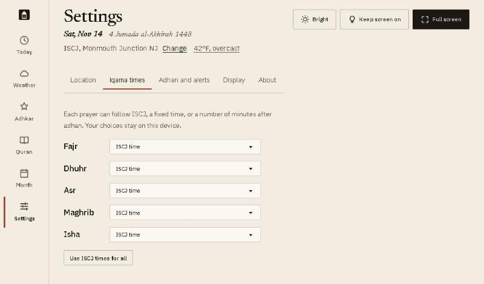

Chapter 4
Iqama times
The iqama is when the prayer starts at the masjid. Each prayer can follow ISCJ, a time you choose, or a number of minutes after the adhan.
Settings › Iqama times


- Choose for each prayer from its drop-down:
- ISCJ time: the masjid’s own iqama time, read from its timetable through the day.
- Fixed time: the same time every day, such as 8:00 PM for Isha. Type it in the box that appears.
- Minutes after adhan: for example 10, so the iqama moves with the adhan as the seasons change. Any number from 0 to 180.
- Use ISCJ times for all puts every prayer back to the masjid’s times.
Example
Your masjid prays Isha 10 minutes after the adhan, and Fajr at 6:00 AM all winter:
- Next to Isha, choose Minutes after adhan and type 10.
- Next to Fajr, choose Fixed time and type 6:00 AM.
- Open the Today screen. The new times show under Isha and Fajr straight away.
Good to know
- Away from ISCJ, the first choice reads Not set instead of ISCJ time, and the button reads Clear all.
- On Fridays, the Dhuhr column shows the Jumu’ah khutbah times instead of an iqama time.
- Your choices stay on this tablet.